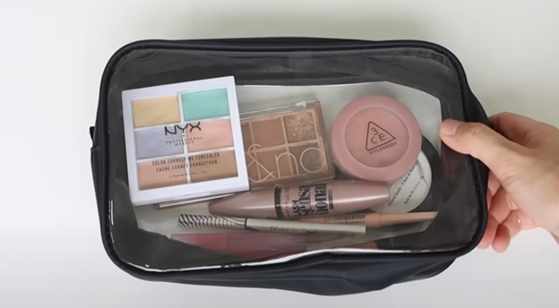

Makeup is something I enjoy doing,makeup is a skill that you perfect over time. When I started wearing makeup every day, I would spend time planning what I would wear the following day and the day after that. I would consider how I could get better. As I sit in front of my vanity and put on makeup, I am aware that the goal of this kind of art has never been to improve my face but rather to express creative energy. I enjoy experimenting with new cosmetics.
